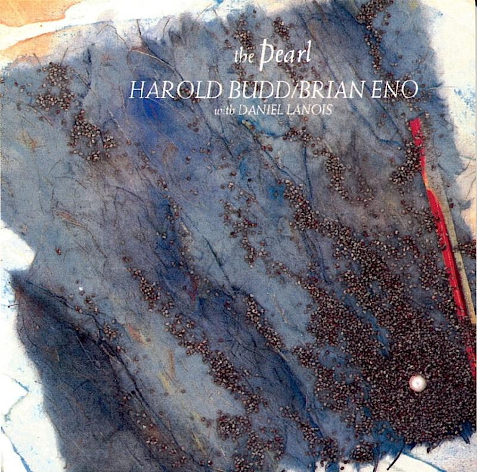

Harmony in ambient music is usually slow-moving and sustained. Chords often change gradually and may remain the same for long periods of time. Ambient composers frequently use extended chords and gentle dissonances to create rich and atmospheric harmonic textures. Rather than creating strong tension and release, ambient harmony is designed to produce feelings of calm, space, and reflection.
Example:
An ambient piece may sustain a small number of chords for long periods while subtle changes in texture and timbre provide interest. Slow harmonic movement helps create a peaceful and immersive listening experience.